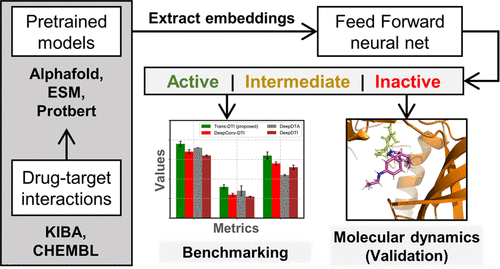
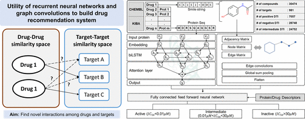
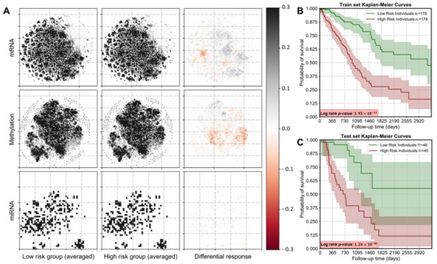

PhD Student
University of Arizona
shashank at arizona.edu
Google Scholar|
ResearchGate|
GitHub|
LinkedIn|
News|
Publications|
Awards|
Reviewing
I am second year Ph.D. student in Biomedical Engineering at the University of Arizona, where I work with Dr. Vignesh Subbian on applications of representational learning in electronic health records. I earned a Bachelor's and Master's degree in Biochemical Engineering and Biotechnology from the Indian Institute of Technology Delhi, New Delhi, India in 2017.
Before joining the University of Arizona, I worked as a Research Specialist at Michigan Medical School. I aspire to be a scientist and educator in the field of representation learning, particularly in biomedical science and technology. I am also interested in advancing the responsible and ethical use of data science in society.
|  |
TransDTI: Transformer-Based Language Models for Estimating DTIs and Building a Drug Recommendation Workflow
Yogesh Kalakoti, Shashank Yadav, Durai Sundar ACS Omega 2022, 7, 3, 2706–2717 pdf code |
|  |
Deep Neural Network-Assisted Drug Recommendation Systems for Identifying Potential Drug–Target Interactions
Yogesh Kalakoti, Shashank Yadav, Durai Sundar ACS Omega 2022, 7, 14, 12138–12146 pdf code news |
|  |
SurvCNN: A Discrete Time-to-Event Cancer Survival Estimation Framework Using Image Representations of Omics Data
Yogesh Kalakoti, Shashank Yadav, Durai Sundar Cancers 2021, 13(13), 3106; pdf code |
| Scientific Reports | since 2022 |
Last Updated: Feb 04, 2023